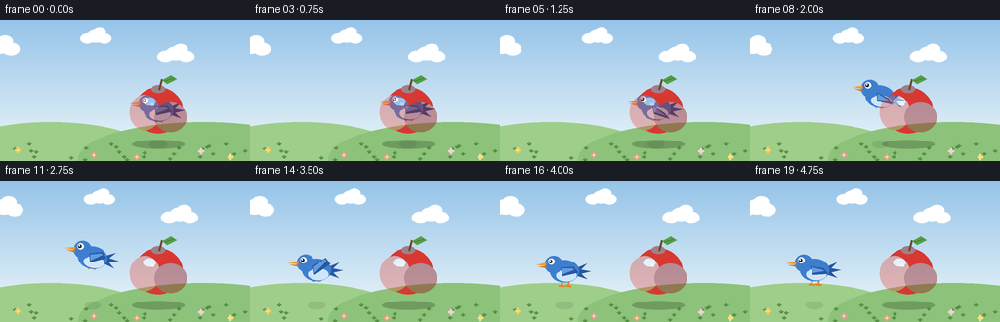
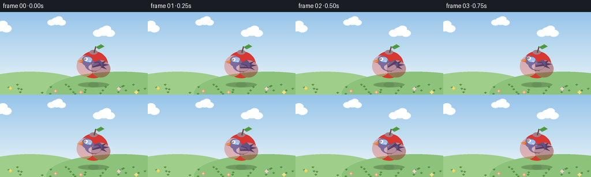

CODING AGENTS AS PIXEL WORLD MODELS
traex/Seed-2.1-Pro-0915 · dynamic_spatial_relationship_0037
点击播放 · 原生 RGB 像素
逐轮保存的候选
回放视频、检查图与代码变化。
每份候选均可单独播放。实际图片检查记录在下方工具轨迹中。
候选 01播放与检查图
点击播放 · 原生 RGB 像素


展开代码变化
--- 上一保存版本
+++ 本次保存版本
@@ -0,0 +1,243 @@
+"""Text-to-video: a bird behind an apple flies out to the left of the apple.
+
+Renders 20 RGB frames (256x144 @ 4fps) with a supersampled PIL pipeline.
+Draw order keeps the apple in front of the bird, so the opening "behind"
+relationship reads as real occlusion until the bird clears the apple.
+"""
+import math
+from pathlib import Path
+
+import numpy as np
+from PIL import Image, ImageDraw
+
+import artifact_io
+
+W, H, N, FPS = 256, 144, 20, 4.0
+SS = 3 # supersampling factor for smooth edges
+CASE_DIR = Path(__file__).parent
+
+APPLE = {"x": 162.0, "y": 92.0, "r": 25.0}
+BIRD_START = {"x": 162.0, "y": 92.0}
+BIRD_END = {"x": 66.0, "y": 92.0}
+
+SKY_TOP = np.array([150, 196, 233], dtype=np.float32)
+SKY_HORIZON = np.array([226, 240, 247], dtype=np.float32)
+GRASS_FAR = np.array([132, 188, 102], dtype=np.float32)
+GRASS_NEAR = np.array([92, 152, 72], dtype=np.float32)
+GROUND_Y = 121
+
+BODY = (62, 126, 207, 255)
+BODY_DARK = (40, 88, 160, 255)
+BELLY = (207, 229, 248, 255)
+BEAK = (242, 153, 46, 255)
+BEAK_DARK = (214, 120, 28, 255)
+FOOT = (232, 132, 40, 255)
+APPLE_RED = (216, 56, 50, 255)
+APPLE_DARK = (150, 24, 26, 110)
+APPLE_LIGHT = (255, 255, 255, 130)
+STEM = (111, 74, 38, 255)
+LEAF = (86, 158, 70, 255)
+LEAF_DARK = (60, 128, 52, 255)
+
+CLOUDS = [(30, 26, 1.0), (128, 16, 0.8), (210, 34, 0.95)]
+FLOWERS = [(18, 133, (244, 205, 96)), (96, 138, (240, 150, 170)),
+ (206, 134, (238, 200, 240)), (236, 140, (250, 224, 130)),
+ (140, 140, (240, 160, 150))]
+
+
+def smoothstep(t):
+ t = min(1.0, max(0.0, t))
+ return t * t * (3.0 - 2.0 * t)
+
+
+def poly(draw, pts, fill, k):
+ draw.polygon([(x * k, y * k) for x, y in pts], fill=fill)
+
+
+def ellipse(draw, cx, cy, rx, ry, fill, k):
+ draw.ellipse([(cx - rx) * k, (cy - ry) * k,
+ (cx + rx) * k, (cy + ry) * k], fill=fill)
+
+
+def line(draw, x1, y1, x2, y2, fill, width, k):
+ draw.line([(x1 * k, y1 * k), (x2 * k, y2 * k)], fill=fill, width=width * k)
+
+
+def background_frame(index):
+ """Static scenery with gently drifting clouds."""
+ k = SS
+ grad = np.zeros((H, 3), dtype=np.float32)
+ for y in range(H):
+ if y < GROUND_Y:
+ f = y / GROUND_Y
+ grad[y] = SKY_TOP * (1 - f) + SKY_HORIZON * f
+ else:
+ f = (y - GROUND_Y) / (H - GROUND_Y)
+ grad[y] = GRASS_FAR * (1 - f) + GRASS_NEAR * f
+ grad = np.repeat(grad[:, None, :], W, axis=1).astype(np.uint8)
+ img = Image.fromarray(grad, "RGB").convert("RGBA").resize((W * k, H * k))
+ draw = ImageDraw.Draw(img)
+
+ # Distant rounded hills peeking over the horizon.
+ ellipse(draw, 52, 138, 105, 34, (158, 206, 138, 255), k)
+ ellipse(draw, 208, 142, 128, 38, (140, 194, 122, 255), k)
+
+ # Soft drifting clouds.
+ drift = (index * 0.35) % (W + 60)
+ for bx, by, scale in CLOUDS:
+ x = (bx + drift) % (W + 60) - 30
+ for dx, dy, r in [(0, 0, 11), (11, 3, 9), (-11, 3, 9), (5, -5, 8)]:
+ ellipse(draw, x + dx * scale, by + dy * scale,
+ r * scale, r * scale * 0.72, (255, 255, 255, 205), k)
+
+ # Grass tufts and little flowers for foreground texture.
+ rng = np.random.default_rng(7)
+ for _ in range(26):
+ gx = float(rng.integers(2, W - 2))
+ gy = float(rng.integers(GROUND_Y + 4, H - 2))
+ line(draw, gx, gy + 3, gx, gy, (70, 128, 56, 255), 1, k)
+ line(draw, gx, gy + 3, gx - 2, gy + 1, (84, 142, 64, 255), 1, k)
+ line(draw, gx, gy + 3, gx + 2, gy + 1, (84, 142, 64, 255), 1, k)
+ for fx, fy, color in FLOWERS:
+ for dx, dy in [(0, -2), (2, 0), (0, 2), (-2, 0)]:
+ ellipse(draw, fx + dx, fy + dy, 1.3, 1.3, color + (255,), k)
+ ellipse(draw, fx, fy, 1.1, 1.1, (250, 226, 120, 255), k)
+
+ return img
+
+
+def draw_shadow(base, cx, cy, ground_y=127.0):
+ k = SS
+ layer = Image.new("RGBA", base.size, (0, 0, 0, 0))
+ d = ImageDraw.Draw(layer)
+ lift = max(0.0, ground_y - 8 - cy)
+ rx = max(8.0, 17.0 - lift * 0.28)
+ alpha = int(max(28, 85 - lift * 2.2))
+ ellipse(d, cx, ground_y, rx, 4.2, (40, 60, 35, alpha), k)
+ base.alpha_composite(layer)
+
+
+def draw_apple(base):
+ """Fixed foreground apple, drawn after the bird so it occludes it."""
+ k = SS
+ ax, ay, r = APPLE["x"], APPLE["y"], APPLE["r"]
+ layer = Image.new("RGBA", base.size, (0, 0, 0, 0))
+ d = ImageDraw.Draw(layer)
+
+ ellipse(d, ax, ay, r, r - 1.5, APPLE_RED, k)
+ # Rounded cheek and subtle shaded lobe.
+ ellipse(d, ax - r * 0.55, ay + 2, r * 0.62, r * 0.72,
+ (228, 74, 62, 90), k)
+ ellipse(d, ax + r * 0.5, ay + r * 0.28, r * 0.66, r * 0.6, APPLE_DARK, k)
+ # Top dimple and stem.
+ ellipse(d, ax, ay - r + 3, 7, 4, (120, 22, 24, 120), k)
+ line(d, ax + 1, ay - r + 4, ax + 4, ay - r - 7, STEM, 2, k)
+ # Leaf.
+ poly(d, [(ax + 4, ay - r - 6), (ax + 13, ay - r - 11),
+ (ax + 19, ay - r - 7), (ax + 9, ay - r - 2)], LEAF, k)
+ line(d, ax + 6, ay - r - 5, ax + 16, ay - r - 8, LEAF_DARK, 1, k)
+ # Glossy highlights.
+ ellipse(d, ax - 9, ay - 9, 6.5, 4.2, APPLE_LIGHT, k)
+ ellipse(d, ax - 6, ay - 6, 2.2, 1.5, (255, 255, 255, 170), k)
+
+ # Apple's own contact shadow.
+ ellipse(d, ax, 127, r + 2, 4.5, (40, 60, 35, 75), k)
+ base.alpha_composite(layer)
+
+
+def draw_bird(base, cx, cy, flap, tucked, tilt_deg):
+ """Bird faces left; rendered on its own layer, banked slightly in flight."""
+ k = SS
+ lw, lh = 120, 86
+ layer = Image.new("RGBA", (lw * k, lh * k), (0, 0, 0, 0))
+ d = ImageDraw.Draw(layer)
+ ox, oy = lw / 2.0, lh / 2.0 # bird origin within layer
+
+ def P(x, y):
+ return (ox + x, oy + y)
+
+ # Tail feathers (right side, bird faces left).
+ for tip_y, tip_x in [(-8, 23), (0, 27), (8, 23)]:
+ poly(d, [P(11, -3), P(tip_x, tip_y), P(11, 4)], BODY_DARK, k)
+
+ # Feet (tucked while airborne).
+ if tucked:
+ line(d, *(P(-2, 10) + P(-3, 12)), FOOT, 2, k)
+ line(d, *(P(4, 10) + P(3, 12)), FOOT, 2, k)
+ else:
+ for fx in (-3, 4):
+ line(d, *(P(fx, 9) + P(fx, 15)), FOOT, 2, k)
+ line(d, *(P(fx, 15) + P(fx - 3, 15)), FOOT, 2, k)
+ line(d, *(P(fx, 15) + P(fx + 3, 15)), FOOT, 2, k)
+
+ # Body and belly.
+ ellipse(d, *P(0, 0), 15, 11.5, BODY, k)
+ ellipse(d, *P(2, 4.5), 10.5, 6, BELLY, k)
+
+ # Head and face.
+ ellipse(d, *P(-11, -7), 9.2, 9, BODY, k)
+ # Beak: upper and lower mandibles.
+ poly(d, [P(-19, -9), P(-29, -6.5), P(-19, -5.5)], BEAK, k)
+ poly(d, [P(-19, -5.2), P(-27, -5), P(-19, -3)], BEAK_DARK, k)
+ # Eye with glint.
+ ellipse(d, *P(-13.5, -10), 3.3, 3.3, (255, 255, 255, 255), k)
+ ellipse(d, *P(-14.3, -10), 1.8, 1.8, (28, 34, 44, 255), k)
+ ellipse(d, *P(-14.9, -10.7), 0.7, 0.7, (255, 255, 255, 255), k)
+
+ # Flapping wing: tip sweeps up/down around the shoulder.
+ tip_x, tip_y = 11, -1 + flap * 8.5
+ poly(d, [P(-4, -4), P(tip_x - 2, tip_y - 3.5),
+ P(tip_x + 3, tip_y + 2.5), P(-2, 5)], BODY_DARK, k)
+ poly(d, [P(-3, -3), P(tip_x - 3, tip_y - 2),
+ P(tip_x - 1, tip_y - 0.5), P(-2, 3)],
+ (96, 156, 224, 255), k)
+
+ rotated = layer.rotate(tilt_deg, resample=Image.BICUBIC, expand=True)
+ base.alpha_composite(
+ rotated,
+ (int(cx * k - rotated.width / 2), int(cy * k - rotated.height / 2)))
+
+
+def bird_pose(index):
+ """Returns (cx, cy, flap, tucked, tilt)."""
+ if index <= 3: # hovering behind the apple
+ cx = BIRD_START["x"]
+ cy = BIRD_START["y"] + math.sin(index * math.pi / 2) * 1.2
+ flap = math.sin(2 * math.pi * 0.35 * index) * 0.6
+ return cx, cy, flap, True, 0.0
+ if index >= 16: # landed to the left of the apple
+ t = index - 16
+ cx = BIRD_END["x"]
+ cy = BIRD_END["y"] + math.sin(t * math.pi / 2) * 1.2
+ flap = math.sin(2 * math.pi * 0.4 * t) * 0.35
+ return cx, cy, flap, False, 0.0
+
+ t = smoothstep((index - 4) / 11.0) # flight, frames 4..15
+ cx = BIRD_START["x"] + (BIRD_END["x"] - BIRD_START["x"]) * t
+ cy = BIRD_START["y"] - 17.0 * math.sin(math.pi * t)
+ flap = math.sin(2 * math.pi * 1.05 * index)
+ tilt = -9.0 * math.sin(math.pi * t) # bank nose-up along the arc
+ return cx, cy, flap, True, tilt
+
+
+def render_frame(index):
+ scene = background_frame(index)
+ cx, cy, flap, tucked, tilt = bird_pose(index)
+ draw_shadow(scene, cx, cy)
+ draw_bird(scene, cx, cy, flap, tucked, tilt)
+ draw_apple(scene) # foreground: occludes the bird while it is behind
+ frame = scene.resize((W, H), Image.LANCZOS).convert("RGB")
+ return np.asarray(frame, dtype=np.uint8)
+
+
+def main():
+ frames = np.stack([render_frame(i) for i in range(N)], axis=0)
+ artifact_io.save(frames, CASE_DIR)
+ diffs = [np.abs(frames[i].astype(int) - frames[i - 1].astype(int)).mean()
+ for i in range(1, N)]
+ print(f"saved {frames.shape} frames; mean frame diff "
+ f"min={min(diffs):.3f} max={max(diffs):.3f}")
+
+
+if __name__ == "__main__":
+ main()
可观测工具轨迹
实际执行的命令与返回图片。
命令 1exit 0
/bin/bash -lc 'ls -la && cat prompt.txt && echo "=====" && cat GENERATION_RULES.md && echo "=====" && cat task_spec.json'
命令 2exit 0
/bin/bash -lc 'cat artifact_io.py'
命令 3exit 0
/bin/bash -lc 'cd . && python generate.py && ls -la && ls frames | head -25'
保存候选 1 份；完成命令 3 次；可验证图片返回 0 张。原始 API 响应与完整日志保留在本地。